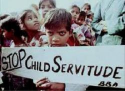

|
|
کودکان خود فروش / رادیو زمانه
دو شنبه10 بهمن 1390

سونیا فالیرو - ماه پیش که داشتم روی کتابم درباره "کار کودکان در هند" تحقیق میکردم، کمکم گذارم به مناطق شمال ایالت "بیهار" افتاد. جایی که "قاچاق کودکان" کاملاً سازماندهی شده است.در این منطقه، علاوه بر داستانهای فراوانی که درباره ربودن کودکان نقل میشد، حکایتهای تکاندهنده و آزاردهندهای نیز از شیوه جدید بردگی کودکان شنیدم.
در این منطقه، کودکانی ۱۰ ساله، خودخواسته خود را در اختیار قاچاقچیان انسان قرار میدهند. چراکه بیش از این نمیتوانند گرسنه بمانند. من با نوجوانی ۱۴ ساله به نام "آرون کومار"، آشنا شدم که حاضر شد از تجربههای خودش برایم بگوید.
کومار، همراه عمو و دو عموزاده کوچکترش در روستای "آمنی" زندگی میکند. فاصله این روستا از "پانتا"، مرکز ایالت بیهار، اگر با اتوبوس راهی سفر شوید، یک روز طول میکشد. دو روز قبل از اینکه ملاقات ما انجام شود، "کومار" توسط یک موسسه خیریه محلی که توسط سازمان "کودکان را نجات دهیم" حمایت میشود، به خانه برگردانده شده بود.
او در یک کارخانه برنج در استان "هاریانا" مشغول به کار بوده است؛ جاییکه به ازای هفت روز کار در هفته، آن هم روزی ۱۸ ساعت، تنها ۸۰۰ روپیه (کمی کمتر از ۲۰ دلار) دریافت میکرد.
کومار میگوید: "گاهی پیش میآمد که دستگاهی خراب میشد، در این صورت کارگران میتوانستند کمی استراحت داشته باشند. در چنین مواقعی من معمولاً به روستای مجاور که یک ساعت دورتر از کارخانه بود میرفتم تا بتوانم بیسکویت بخرم."
موسسه خیریه "کودکان را نجات دهیم"، ابتدا از مسئولان کارخانه برنج خواست که روش خود را تغییر دهند و سپس رئیس کارخانه را با برگزاری تظاهرات پر سر و صدا در بیرون از محل کارخانه تهدید کرد. در نهایت رئیس کارخانه پیش از آنکه کومار را آزاد کند، گفت: "من برای استخدام این بچه پول دادهام."
بردگی خودخواسته
این نخستین مرتبهای نبود که موسسه خیریه "کودکان را نجات دهیم"، کومار را از چنین کارخانههایی بیرون میآوردند. سال گذشته نیز او را از یک کارخانه دیگر بیرون کشیده بودند. جالب اینجا بود که پلیس در هیچکدام از این موارد دخالت نکرد. پلیس تنها زمانی که متوجه شد صاحبان کارخانه به قاچاقچیان پول میپردازند، اقدام موثری کرد.
وقتی از کومار پرسیدم: چه کسی تو را مجبور به کار در این کارخانه کرده است؟ او در پاسخ به من گفت: "هیچکس. من رفتم چون خودم میخواستم در این کارخانه کار کنم."
او سپس برایم توضیح داد که عمویش خیلی کار میکرد، اما با این وجود پول کافی برای صرف بیش از یک وعده غذا در روز را نداشت. خانوادههای مرفهتر روستایی میتوانستند دو وعده غذا در روز بخورند.
مردم این روستا هرگز برق، آب یا حتی زمین کشاورزی برای کاشت نداشتهاند. در واقع فرصتی برای تحصیل یا کار در این روستا وجود ندارد. خانوادههای مرفه روستای همسایه، در پیوند با مسائل مربوط به این روستا و زندگی سخت ساکنان آن بارها به مقامات دولتی هشدار دادهاند.
 فقر همیشه منجر به کار کودکان شده است. به طور تقریبی در هند، ۱۷ میلیون "کودک کار" وجود دارد. بسیاری از این کودکان در رستورانهای کنار خیابان، نانواییها یا تعمیرگاههای ماشین مشغول به کارند. هندیهای شهرنشین، گمان میکنند این کودکان یا از سوی خانوادههای خود برای به دست آوردن اندکی پول بیشتر روانه شهر شدهاند یا آنکه خود فرار کردهاند.
فقر همیشه منجر به کار کودکان شده است. به طور تقریبی در هند، ۱۷ میلیون "کودک کار" وجود دارد. بسیاری از این کودکان در رستورانهای کنار خیابان، نانواییها یا تعمیرگاههای ماشین مشغول به کارند. هندیهای شهرنشین، گمان میکنند این کودکان یا از سوی خانوادههای خود برای به دست آوردن اندکی پول بیشتر روانه شهر شدهاند یا آنکه خود فرار کردهاند.واقعیت این است که بسیاری از این کودکان، از طریق شبکههای بزرگ، قاچاق میشوند. فقر، نیازهای کودکان، بیتوجهی عمومی نسبت به مسئله و مهمتر از همه، سودی که این تجارت غیرقانونی به جیب صاحبان شبکه سرریز میکند، سبب مصونیت شبکههای قاچاق در برابر قانون کار و مقامات دولتی است.
شبکههای قاچاق، مردان میانسال را اجیر میکنند تا قربانیان خود را نه تنها در حومه شهرهایی مانند "دهلی" یا "هاریانا" که تقاضای بالایی برای کار وجود دارد (در کارگاهها، کارخانههای برنج یا خانههای خصوصی)، بلکه در شهرها و روستاهای دورافتاده که فقر و بیپولی مردم را به حاشیه رانده است، بیابند. دلالهای پرشماری هستند که کودکانی نظیرکومار، حتی میتوانند بدون اطلاع خانوادههایشان خود را در اختیار آنها قرار دهند.
کومار میدانست که ادامه زندگی در "آمنی" هیچ چشمانداز روشنی برایش نخواهد داشت. ولی این مسئله که او نمیتوانست شکم خود را سیر کند، باعث شد به دنبال کسی باشد که خودش او را "پیمانکار کارگری" میخواند.
او با برخی از کسانی که راه طولانی تا "هاریانا" را برای یافتن کار رفته و برگشته بودند (حدود ۲۲ ساعت با قطار) صحبت کرده بود. همه آنها مثل خود او، کودکانی ۱۰ تا ۱۵ ساله بودند که فکر میکردند باید کار کنند تا از گرسنگی نمیرند.
حال اگرچه قانون کار، استخدام کودکان زیر ۱۴ سال را ممنوع کرده است، پیمانکار نه تنها کومار را بلافاصله استخدام کرد، بلکه به او هزار روپیه (معادل ۲۰ دلار) پیش از شروع کار نیز پرداخت کرد. این میزان پول، تقریباً معادل دستمزد یک ماه یک کارگر بالغ است.
کومار خیلی زود متوجه شده بود برای انجام همان کار در کارخانه برنج، خیلی کمتر از یک آدم بالغ به او پول میدهند. از سویی دیگر، خیلی از کارهایی که او انجام میداد، مانند کار کردن با ماشینهای سنگین، برایش خطرناک بود. از سویی دیگر استخدامش نیز غیرقانونی تلقی میشد. با این حال چون به کار نیاز داشت، از اینکه یک فرصت شغلی برایش ایجاد شده بسیار خوشحال شده بود.
این مسئله که او را دومرتبه برخلاف میلش از کارخانه به خانه بازگردانده بودند، ناراحتش نمیکند. واقعیت این است که کومار فکر میکند فعالان تشکلهای غیردولتی باید کار خود را بر پایه وجدان و وظیفه حرفهای انجام دهند و او نیز حق دارد فراخور شرایط زندگیش تصمیم بگیرد. کومار» میگوید: "وقتی سبزیجات تمام شود، وقتیکه «رییس» (نوعی نان) که ما میخوریم تمام شود، من برمیگردم سر کار."
منبع: نیویورک تایمز، ششم سپتامبر ۲۰۱۱
نوشته سونیا فالیرو / برگردان نادیا پارسا